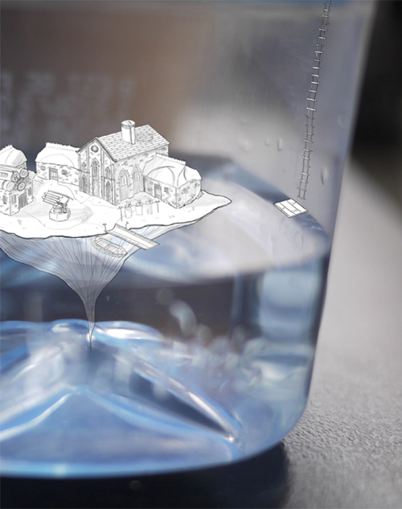
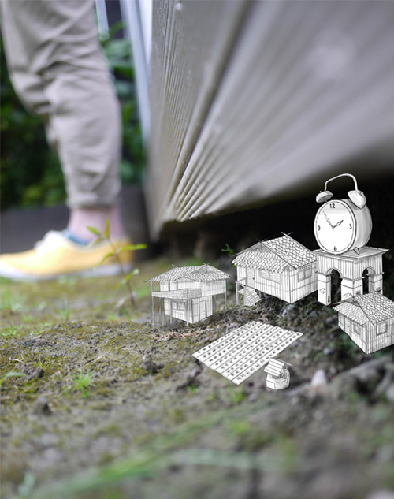
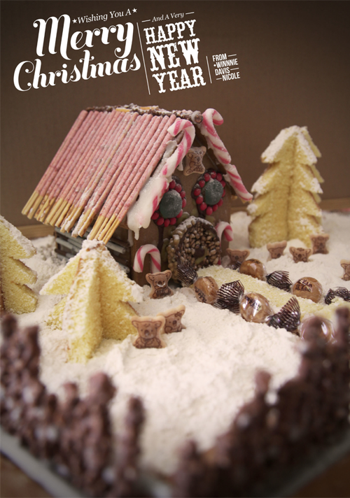

random videos and eat vari-
ous assortments of food. Oh,
you too? Let's be friends.
Scroll away!

Dwerking
A collaboration with some talented Bboys. Choreographed on the day according to the environment. The rough idea of the story was to portray the nostalgic and childish side of our everyday lives - everything can be fun.
10cm - Music Video
A simple music video cover using the assets available to us at the time. Experimenting on smooth camera movement with a forklift and a tripod. It was pretty dangerous but well worth it.
The Next Episode
A one-shot live performance in collaboration with some awesome Bboys and my musical friend on the Cajon. Stripping down to the basics of dancing with a simple beat and letting your body carry you.
Stop Motion Stickies
An assignment during AUT 2010 where we create an advertisement using the technique of Stop Motion.
Battlecry 2013
A collaboration with TheBreaksNZ. Here is the recap video for one of the biggest events that is held every year in the Bboy community.
Best Ugly Bagels
Thank you to Best Ugly Bagels for letting my friend and I observe and film! My first attempt at a promotional video and wanted to start off at one of my favorite spots.
Habitat For Fitness
Filming for Habitat For Fitness otherwise known as Kingsland Crossfit, was an amazing experience. The team is super friendly, helpful and patient.
Reach Out 2014
A youth charity event held in the heart of Auckland to raise money and help cultivate creative arts. I had many roles within this event which includes marketing, graphic designer and assistant to the organizer.
Work
 Part of my final exhibition in AUT that involved the idea of Generation-Z becoming overwhelmed with technology. Please refer to "Work" video.
Reach Out

A charity event.
Christmas Cards
Gingerbread house made out of Eastern Dragon products